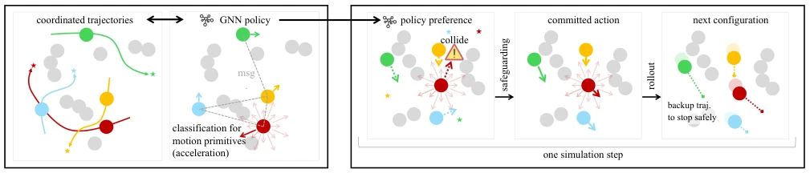
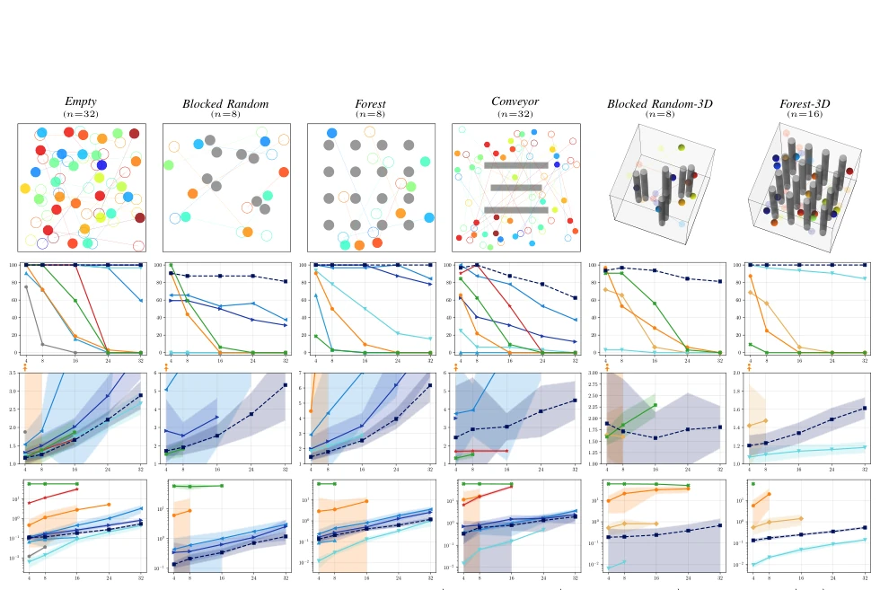
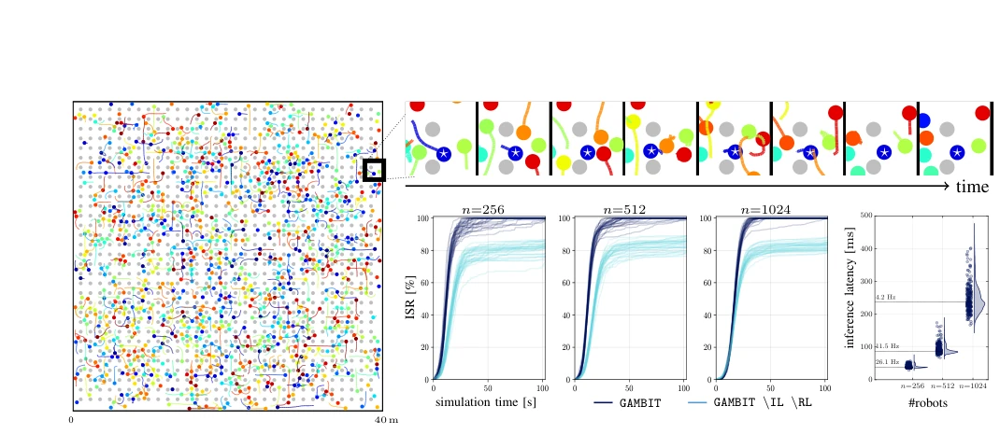
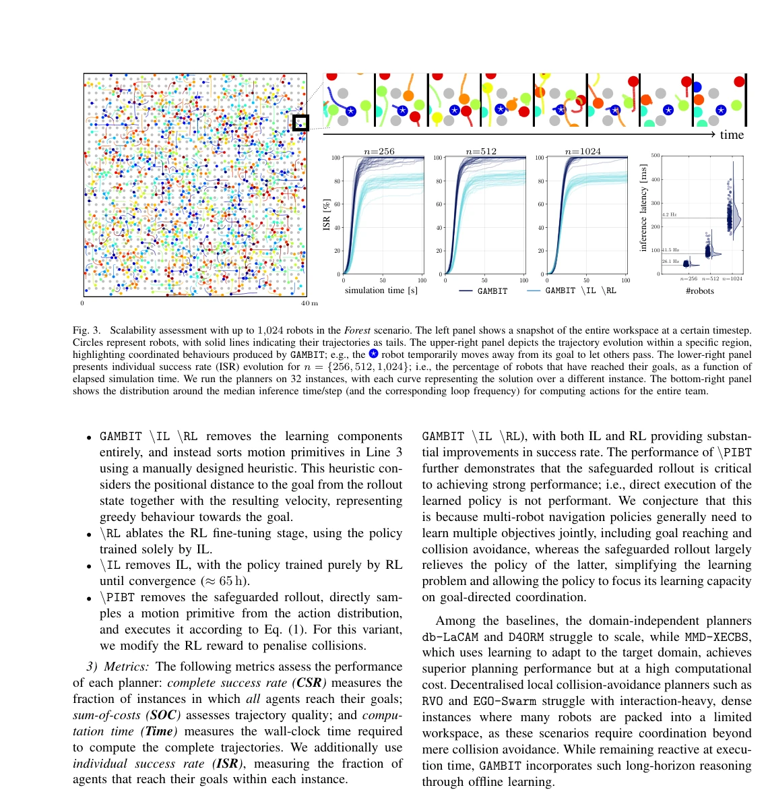
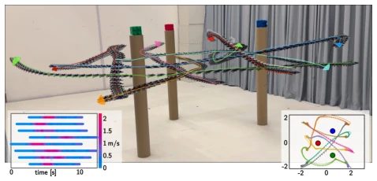

The name GAMBIT is quite clever, like a sacrifice opening in chess, implying robots must sacrifice local optimality for the greater good. This work indeed has substance, moving discrete MAPF ideas to the continuous dynamics domain and achieving a scale of 1024 robots, which is quite rare in real-robot deployment. However, do not be fooled by the word "safety"; it relies on a double integrator model, ignoring the complex aerodynamics of real-world UAVs. Moreover, although claiming "collision-free", the experiments also admit the livelock problem, especially in narrow passages, where the so-called "heuristics" may be inferior to manual hard-tuning. Overall, it is a good engineering framework, but theoretical perfection needs to be discounted, after all, there are no perfect planners, only usable planners.
Continuous multi-robot trajectory planning has always been a tough nut to crack. Existing discrete MAPF methods [6]-[8], while mature, cannot directly handle continuous dynamics. Motion primitive-based methods [5] often rely on hand-crafted heuristics and tend to fail in dense interaction environments. For example, reactive planners like RVO [15] easily fall into local optima in dense scenarios, lacking long-horizon coordination. Learning-based methods such as MMD-XECBS [18] perform well but have high computational costs. The main challenges lie in data scarcity in continuous space, solution multi-modality, and safety protection gaps in RL training. Manually designing coordination rules is hard to scale, thus requiring automatic learning of heuristic strategies capable of handling non-greedy behavior.
The framework consists of two-stage training plus safe execution. First, a GNN is used as the backbone network, containing an encoder, communication layer, and decoder, taking local observations (velocity, relative goal, FOV, etc.) as input and outputting the classification distribution of motion primitives (acceleration). The first stage uses IL for pre-training on small-scale instances, utilizing data generated by a centralized planner [5] to overcome data scarcity. The second stage uses RL for fine-tuning, optimizing total cost and alleviating multi-modality issues. The core innovation is "Safeguarded Rollout". Since continuous dynamics lack a "stop" action, the authors designed "Backup Trajectories", which are trajectories for emergency braking after executing a primitive. Combined with the PIBT algorithm, if the current primitive is unsafe, it falls back to the backup trajectory. This ensures that regardless of what the policy outputs, the system can always find a collision-free subsequent action, solving the safety signal dilution problem in RL training. Additionally, scenario generation specifically designed two types, Blocked Random and Forest, to ensure sufficient interaction signals during training.

Fig. 1. GAMBIT framework overview. We aim to learn a coordination-aware GNN policy that provides heuristic preferences over motion primitives. The framework consists of (a) imitation pretraining and (b) RL fine-tuning. The former step learns from demonstration trajectories by treating motion-primitive selection as a classification task. The latter uses multi-agent RL to maximise multi-robot navigation performance through our safeguarded rollout mechanism. The resulting policy, combined with the safeguarded rollout, enables collision-free execution while retaining high scalability.
Testing was conducted in various 2D/3D scenarios (Empty, Blocked Random, Forest, Conveyor). Baselines include RVO [15], db-LaCAM [5], MMD-XECBS [18], etc. Metrics include CSR, SOC, and computation time. GAMBIT achieves the highest success rate in dense scenarios, and computation time is controllable (32 robots approximately 1 second). Scalability tests show it can handle 1024 robots, with individual success rates remaining high, while baseline methods fail completely at this scale. Ablation studies prove IL, RL, and PIBT mechanisms are all indispensable; removing PIBT leads to increased collision rates. Finally, closed-loop control was verified on 8 quadrotor real robots, reaching speeds of 2.2 m/s, proving engineering feasibility. Although deadlock issues exist, the collision-free property ensures safety.

Fig. 2. Main result. For each scenario, an example instance is shown at the top, where filled circles represent robots and unfilled circles connected by lines indicate their corresponding goals. Grey circles, rectangles, and cylinders represent obstacles. The remaining plots show, from top to bottom, CSR (complete success rate), SOC (sum-of-costs; normalised by lower bounds based on start–goal distances), and computation time to derive the entire trajectories. SOC and computation time are averaged over successful instances for each planner, with shaded regions indicating one standard deviation; to ensure meaningful comparisons, we report these metrics only when the corresponding success rate exceeds 50%. db-LaCAM’s SOC often exceeds the displayed range; we use an orange dot and arrow to in

Fig. 3. Scalability assessment with up to 1,024 robots in the Forest scenario. The left panel shows a snapshot of the entire workspace at a certain timestep. Circles represent robots, with solid lines indicating their trajectories as tails. The upper-right panel depicts the trajectory evolution within a specific region, highlighting coordinated behaviours produced by GAMBIT; e.g., the ⋆robot temporarily moves away from its goal to let others pass. The lower-right panel presents individual success rate (ISR) evolution for n = {256, 512, 1,024}; i.e., the percentage of robots that have reached their goals, as a function of elapsed simulation time. We run the planners on 32 instances, with each curve representing the solution over a different instance. The bottom-right panel shows the distrib

Figure 2 summarises our main results. GAMBIT achieves high success rates across all tested scenarios, including both in-distribution and out-of-distribution settings, at scale while maintaining highly competitive solution quality, deliv- ering the strongest overall performance among the evaluated methods. The computation time remains moderate; even with 32 robots, GAMBIT requires only about 1 s to derive feasible trajectories, suggesting real-time planning ability, which we investigate further in Sec. IV-C and IV-D. A closer look reveals that learning is a key component (see
其他图片Other Figures

Fig. 4. Snapshot from a GAMBIT deployment with eight multirotors planning at 10 Hz. (left-inset) Speed profile (m/s) for the robots in this instance. (right-inset) Top-down view of the arena and trajectories.